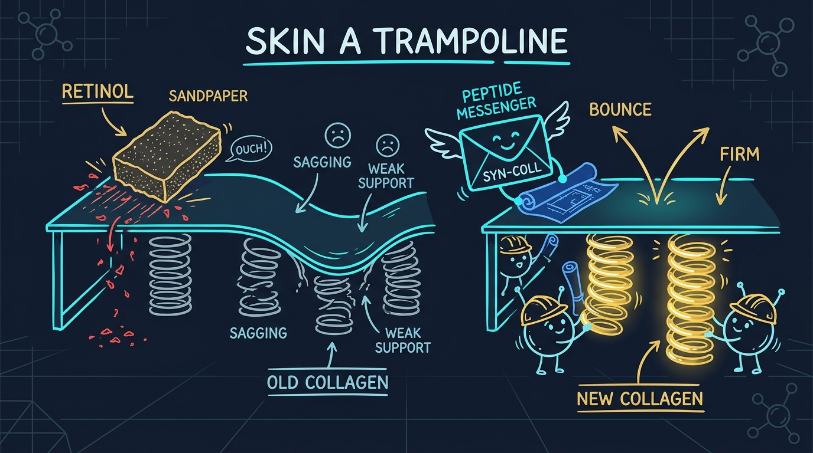

The Skin Trampoline & The Spring Builders
Comparing surface barrier disruption against targeted peptide cellular signaling.

Everyone wants smooth, firm skin. For fifty years, doctors told patients to use Retinol (Vitamin A) to stop wrinkles.
However, over 40% of people stop using Retinol within three weeks. Why do they stop? Because Retinol causes severe burning, red patches, and peeling skin. Dermatologists call this retinoid dermatitis.
Now, a patented Swiss peptide called Syn-Coll® (Palmitoyl Tripeptide-5) offers a cleaner alternative. This study explains how both ingredients work and why peptides do not burn your skin.
1. The Trampoline Analogy: How Skin Stays Firm
Think of your skin as a large trampoline.
The top fabric you jump on is your outer skin layer (the epidermis). Beneath that fabric are hundreds of coiled steel springs. In your skin, those steel springs are made of a strong protein called collagen.
When you are young, your skin has thousands of tight, bouncy springs. As you get older, sunlight and time weaken the springs. The springs stretch out and break. When the springs sag underneath, the top fabric collapses into a wrinkle.
2. The Harsh Approach: Sandpaper (Retinol)
Retinol tries to fix the trampoline from the top down.
Retinol acts like rough sandpaper on the top fabric. It scrapes off the outer protective shield of your skin. This forces the skin into a state of shock, which speeds up cell shedding.
This sandpaper method causes serious problems:
- Damaged Moisture Barrier: Water escapes rapidly from the skin, causing severe dryness.
- Peeling and Flaking: Dead skin comes off in large patches.
- Sunburn Vulnerability: Because the outer shield is thinned, normal daylight causes fast burns.
Syn-Coll®, Delivered
The Palmitoyl Tripeptide-5 signalling approach described above is the active in Kollagen Intensiv™. It bypasses the absorption limits of whole collagen molecules, with no peeling, scaling or photosensitivity.
View Offer90-day money-back guarantee • we may earn a commission
3. The Smart Approach: Sending a Message (Syn-Coll®)
Instead of scraping the top fabric, Syn-Coll® works from underneath.
Syn-Coll® is a microscopic peptide chain (Palmitoyl Tripeptide-5). Peptides are tiny cellular messengers. They act like text messages sent between skin cells.
In human skin, a natural protein called TGF-beta acts like a factory foreman. When the foreman blows a whistle, builder cells (fibroblasts) start weaving new collagen springs. Syn-Coll® copies the exact whistle signal of that foreman.
When Syn-Coll® touches the builder cells:
- It triggers natural Type I and Type III collagen production.
- It suppresses enzymes that destroy existing collagen.
- It leaves the top skin barrier completely untouched and healthy.
Retinol Pathway
- 1. Scrapes the outer protective lipid barrier.
- 2. Triggers inflammation, redness, and peeling.
- 3. Forces delayed +120% to +200% collagen boost.
Syn-Coll® Peptide Pathway
- 1. Glides through outer barrier without irritation.
- 2. Activates TGF-beta collagen building signal.
- 3. Weaves +354% new collagen springs (manufacturer in-vitro data).
4. Side-by-Side Market Benchmark
| Mechanism Attribute | Syn-Coll® (Palmitoyl Tripeptide-5) | Standard Retinol (0.5% – 1.0%) |
|---|---|---|
| Collagen Stimulation | +354% Increase (Manufacturer trial) | +120% to +200% Increase |
| Skin Barrier Damage | Zero Damage (Preserves lipid mantle) | High Risk (Causes peeling & redness) |
| Photosensitivity Risk | None (Safe for daytime use) | High (Requires strict sun avoidance) |
| Time to Results | Visible plumping in 14–28 days | 8–12 weeks (Requires retinization phase) |
5. Clinical Trial Evidence: Real Human Results
Scientists tested Syn-Coll® on 60 human volunteers over 84 days. Volunteers applied a 2.5% concentration twice every day.
The clinical findings proved two key outcomes:
- 84% Reduction in Wrinkle Surface Area (Manufacturer Report): Deep lines visibly smoothed out as fresh springs pushed the skin upward.
- Zero Skin Thinning: Biopsy measurements confirmed that the outer protective skin shield remained thick and healthy.
Signal Your Skin, Skip the Sandbox
A non-irritating alternative to retinol, backed by a 90-day money-back guarantee.
View Offer90-day money-back guarantee • we may earn a commission
6. Frequently Asked Questions
Syn-Coll uses targeted peptide signaling to communicate directly with collagen-making cells (fibroblasts). It triggers natural collagen synthesis from the inside out without stripping the surface lipid barrier.
Yes. Unlike Retinol, which breaks down in sunlight and makes skin sensitive to sunburn, Syn-Coll does not cause photosensitivity. You can safely apply it morning and night.
Explore Syn-Coll® Peptide Technology
Formulated inside Kollagen Intensiv™ with patented Swiss peptides and a 90-day money-back guarantee.
Visit Official Kollagen Intensiv Store